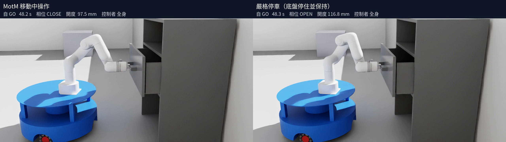
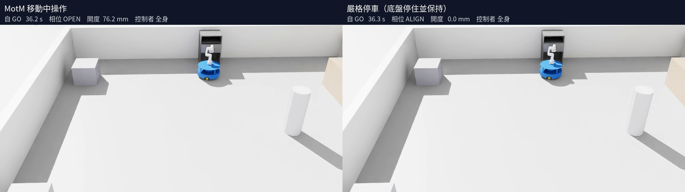
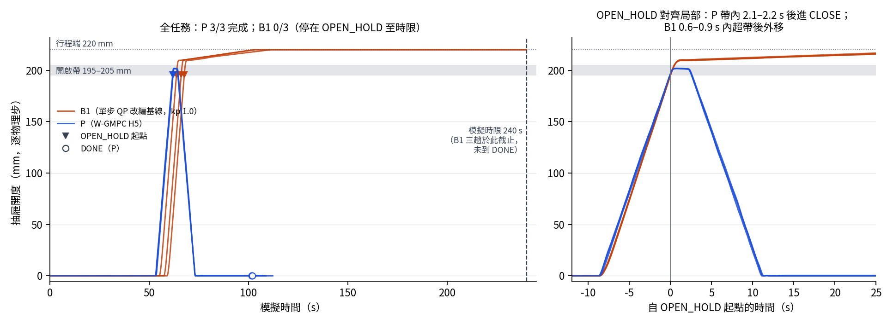

動態環境下移動機械臂
預測導航與受約束操作
W-GMPC 全身預測控制
與移動中抽屜操作
與移動中抽屜操作
從分別驗證的能力，推進到
完整閉迴路操作與對照實驗。
完整閉迴路操作與對照實驗。

正式配對 A 實錄重播畫面：左 MotM，右嚴格停車。
本次重點
模型與求解器實作 → 完整操作 → 三類比較

模型與求解器實作 → 完整操作 → 三類比較
第五次已做到哪裡，本次接著解什麼
增廣狀態、預測求解與執行回授
導航、抓取、開關、收臂與返回
策略比較、時域消融、架構比較
成果能支持什麼，還有什麼需要改善
抽屜受滑軌限制，末端不能任意移動。

| 面向 | 第五次已完成 | 第六次推進 |
|---|---|---|
| 全身模型與控制 | 九自由度模型 單步 QP 全身到位 | 增廣模型、多步 W-GMPC 納入手臂設定點追蹤 |
| 模擬執行 | 導航與全身閉迴路 分別驗證 | 串接控制權交棒 完成整套閉迴路流程 |
| 接觸操作 | 固定底座、理想連接約 200 mm 摩擦夾持仍在驗證 | 摩擦夾持下完整開關與返回 加入底盤與手臂分擔 |
| 實驗證據 | 各項能力的案例驗證 | 嚴格停車、H1/H5、B1/P 三類有界對照結果 |
手臂實際關節會落後設定點；命令速率不等於立即達成的關節速率。
H5：5 個預測步，總預測窗 0.25 s。
TCP 位置／姿態誤差
命令代價、相鄰命令增量
最後一步使用終端權重
底盤參考速度
手臂名目姿態
由任務相位提供設定
速度／加速度、關節有效限位
預測實測角＋位置設定點
輪速／輪加速度
底盤低速移動，手臂補償 TCP 位姿。
底盤參考速度＋手臂名目姿態引導分擔。
導航 GMPC；操作 W-GMPC；展開／收臂含軌跡節點。
先停住，再以正常受限伺服保持；不是鎖世界位姿。
全身操作期合規：3/3
最大位移 0.479–0.487 mm
最大線速度 0.930–0.975 mm/s
共同 GO → 獨立終端完成
包含停車、等待與完整返回。
| 配對 | MotM | 嚴格停車 | 差值 M − H |
|---|---|---|---|
| A（M先） | 80.99 s | 93.50 s | −12.51 s |
| B（H先） | 80.70 s | 93.89 s | −13.19 s |
| C（M先） | 80.46 s | 93.48 s | −13.02 s |
兩組任務判準均 3/3 通過。
主要收益在入場／交棒，另有開關流程收益。
整體追蹤、停頓與命令反轉指標較佳。
同一模型與求解核心，每輪核心計算較省。
| 指標（各三趟範圍） | H5 | H1 |
|---|---|---|
| 任務判準通過 | 3/3 | 3/3 |
| 不允許停頓 | 0 | 2–4 次 |
| W-GMPC 控制窗 | 30–36 s | 37–59 s |
| 手臂命令相鄰反轉率 | 1.1–2.3 次/s | 26–28 次/s |
| 整控制窗位置誤差 p95 | 7.3–9.8 mm | 10.8–16.6 mm |
| 求解核心時間 p50 | 18–22 ms | 6–9 ms |
C1a 補充 行程 100／150 mm：H5 通過 4/4、H1 通過 3/4；一個中止配對有紀錄缺口，不進連續指標比較。
預測、SQP、延遲與偏移補償。
單步運動學，非 W-GMPC 的 N=1。

P：3/3 完成。
B1：0/3，超開啟帶至 220 mm；
240 s 時限內未完成。
核心 p50：B1 1.74–1.79 ms
P：12.9–18.4 ms。
B1 命令增量較小，但未完成任務。
協同權重沿用 P，有限調參。
非單步 QP 最佳性能；
不能單獨歸因於缺少多步預測。
剩餘抖動、夾持承載變化與停車速度餘裕。
時間收益不以犧牲品質換取。
事前登錄不同停位、起始構型與行程。
有限案例不等於跨任務泛化。
分開時域、成本結構與模型補償的影響。
建立更充分、可解讀的基線。
增廣 W-GMPC 串接導航交棒、摩擦夾持、
完整抽屜開關與返回。
嚴格停車對照三對皆完成；MotM 全程縮短
12.51–13.19 s（13.38–14.05%）。
H5 整體運動指標較佳；B1 核心計算較省，
但本配置下未完成完整任務。
已知模擬場景、真值目標、有限樣本；
非完整安全保證、成功率或泛化證明。